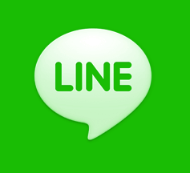

Eğer Sitemize Telefondan Giriş Yaptıysanız Ekranınızı Yan Çevirmeniz Siteyi Daha İyi Görüntülemenizi Sağlar
Son Dakika
6 Şubat 2023' de Türkiye' de Türk kurumlarına göre 7.6 VE 7.7' lik ve 2 Dakikalık Bir Deprem Gerçekleşti.1999 17 Ağustos 'da Gerçekleşen Depremden Sonraki Türkiye' de Yaşanmış En yıkıcı 2. Deprem.Bu Deprem Gaziantep' de saat gece 4.18' de Gerçekleşti ikinci deprem Kahramanmaraş' ta saat 13.24' te gerçekleşti.Türkiye İçin.Şuanlık Ölü Sayısı 912 ve Enkaz Altında Yaralıların Sayısıda 2.323' tür.300 Adet Bina Yıkılan Deprem Sadce Türkiye' yi Değil Nerdeyse Bütün Orta Doğu' yu Etkiledi Ama Bunların Arasında En çok Etkilenen İki Ülke Türkiye Ve Suriye' dir. Ülkemizde 4. Seviye Alarm Uygulandı.Süleyman Soylu' da Deprem Üzerinde Şu Açıklamalarda Bulundu Depremden Gaziantep, Osmaniye, Malatya, Adıyaman, Adana, Diyarbakır, Kilis ve Şanlıurfa'nın etkilendiğini dile getiren Soylu, "Çok yerden ihbar geliyor. Şu anda arama kurtarma ekiplerimiz bölgelere sevk edildi. Kargo uçaklarımız hazırlanıyor, bölgelere sevk edildi. İlk işimiz arama kurtarma çalışmalarını yapmak. Bunun için de bütün ekiplerimiz teyakkuz halinde. Dördüncü seviye alarm ortaya koyduk. Dördüncü seviye uluslararası yardımı da içeren bir alarmdır. Bu açıdan şu andaki son durumumuz bu.AFAD içerisinde oluşturulan basın merkezinden belirli zamanlarda vatandaşlara bilgi verileceğini ileten Soylu, "Biz hepimiz bakan arkadaşlarımızla paylaştık. Hepimiz yani depremin etkilediği bütün illere, vilayetlere bütün arkadaşlarımızla beraber geçmiş olacağız, geçeceğiz.Şu anda yıkım ve can kaybı bilgisi konusunda net bir şey söyleyemeyiz. Ancak biz bu konulardaki açıklamaları sürekli mutat bir şekilde devam ettireceğiz Dedi.

Siyasi İlişkiler
Rusya Ukrayna' ya savaş açtı.Savaşta 40 Ukrayna Milli Askeri Öldü.Avrupa' nın sessizliğini bozan bu savaş medya sarstı.ABD' nin Cumhurbaşkanı Joe Biden Savaş Üzerine Açıklamalar Yaptı.Türkiye bu savaşta tarafsız olacağını söyedi ancak hala Fransa' cumhurbaşkanı Olan Macron Görüşmelerini Sürdürüyor.Rusya Türkiye' nin Ukrayna' ya sattığı İHA ve SİHA' ları Bombaladı.Belarus Kiev' e 4 tane bomba attı.Rusya Çernobil nükleer santralini eline geçirdi
ABD Başkanı Joe Biden, Rusya’nın Ukrayna’ya yönelik adımlarını "işgalin başlangıcı" olarak nitelendirerek, Rusya’ya yönelik yaptırımların ilk bölümünü duyurdu. Ukrayna halkı savaş yüzünden komuşu ülkelere gitmeye özelliklede (Polonya, Romanya, Macaristan) gibi ülkelere daha fazla Ukrayna' lı mülteci akımı başladı Biden, Beyaz Saray'da düzenlediği basın toplantısında Rusya Devlet Başkanı Vladimir Putin'in dün Ukrayna'da iki bölgeyi "bağımsız devletler" olarak tanıdığını duyurduğunu anımsatarak, "Bunu basitçe ifade etmemiz gerekirse, Rusya Ukrayna'nın büyük bir parçasını onlardan kopardığını açıkladı." ifadesini kullandı. Putin'in dün gece de söz konusu iki bölgeye asker gönderme kararı aldığını ve askerlerin alanını genişlettiğini anımsatan Biden, "Benim bakış açımdan Putin, daha fazla toprağa zor kullanarak sahip olmak için gerekçeler kuruyor. Dün geceki konuşmasını dinlerseniz, daha da ileri gitmek için gerekçeler ürettiğini görebilirsiniz. Bu Ukrayna'da Rus işgalinin başlangıcı." ifadesini kullandı. "BUNU PUTİN'İN YÜZÜNE KARŞI SÖYLEMİŞTİM" ABD Başkanı Joe Biden'ın açıklamalarından öne çıkanlar şöyle: "Bu halk cumhuriyetlerini tanıma hakkını nereden buluyor? Kesinlikle uluslararası hukukun ihlalidir bu. 1 ay önce sayın Putin'in yüzüne karşı birlikte hareket edeceğimizin ifade etmiştim, eğer Ukrayna'ya saldırı olursa, bağımsız devletleri tanıdığını iddia ederse. Rusya'ya uygulayacağımız yaptırımları açıklamak istiyorum. Ortaklarımızla işbirliği içerisinde belirledik. 2 finans kurumuna, Rusya Ticaret ve Kalkınma Bankası'na ve bir askeri bankaya yaptırım uyguluyoruz. Rusya'nın devlet borcuyla ilgili olarak batıdan finansmanını durduruyoruz. Artık Rusya batıdan finansman alamayacak. "RUSYA BEDEL ÖDEYECEK, YAPTIRIMLAR ARTACAK" Yarından başlayarak aynı zamanda Rusya'daki bazı elit aile üyelerine (oligarklar) karşı yaptırımlar uygulamaya başlayacağız. Almanya ile birlikte çalıştık. Kuzey Akım 2 boru hattı projesinin ileriye gitmeyeceğinde mutabık kaldık. Rusya bedel ödeyecek. Yaptırımlar artacak.
28 Kasım (2021)
İstanbul 'da yaşanan lodosta Çatalca 'daki saat kulesi bir anda yerle bir oldu. Aynı zamanda İstanbul 'da yaşanan lodostan dolayı yüzyüze eğitime kısa bir ara verildi.Türkiye kuvvetli lodosun etkisi altında. Başta Marmara, Ege ve Akdeniz bölgeleri olmak üzere Türkiye'nin birçok bölgesinde etkili olan kuvvetli lodos hayatı olumsuz etkiliyor. Çanakkale, İzmir ve Bursa'da deniz ulaşımı aksarken, İstanbul'da da bazı seferler yapılamadı. Diğer yandan kuvvetli rüzgarın etkisiyle çatı uçması, ağaç devrilmesi riski yaşanıyor
Yaşanan Lodosta Çamlıça' daki kocaman Türk bayrağı Koptu Ve Adeta Havada Süzüldü.İnsanları Bunu Görünce Ne Olduğunu Anlayamadı.Çoğu Kesim Rüzgardan Dolayı Bayrağı İndirdi Dedi.Ayrıca Lodostan Doluya Ölümler 10 üstüne çıktı
Kısa Bilgiler
Google 'a girdiğinizde kendimi şanslı hissediyorum butonuna tıklarsanız o zamana kadar yayınlanmış tüm Doodle 'ları göreceksiniz.
Google 'a girdiğinizde "Thanos" yazarsanız karşınıza bir Thanos eldiveni çıkıcak.
İnternet olmayınca karşınıza çıkan dinozor oyunu aslen 2014' te çıkmıştır
Google 'a girdiğinizde Uygulamalar butonuna basarsanız tüm siteler çıkacak (Google 'ın yaptığı siteler)
Roblox
çöktükten sonra Roblox 'da bazı kullanım kuralları değişti örneğin Roblox 'da artık Robux 'la aldığınız bir kıyafeti aldıktan sonra kıyafeti yapan kişi kıyafeti silerse veya banlanırsa kıyafet silinir ve onu kullanamazsınız ama eğer Roblox 'a bunu gönderirseniz Roblox kıyafetin Robux 'unu size geri iade eder ve Robux size geri gelir. (Ama bu güncelleme bazı kişilerin hileyle Robux almasını sağlayabilir)
Roblox yapıldığından bu güne bir çok isim ve logo değişikliği yaşadı
Minecraft
Minecraft 'ın yapımcısı Notch Minecraft 'ı 2 milyar dolara sattı.
Minecraft Warden güncellemesini 1.19 sürümüne erteledi aynı zamanda 1.19 sürümü için seçilen mob "Allay" olarak oylamayla seçildi.
Minecraft, İsveçli geliştirici Markus Alexej Persson tarafından geliştirilen, 2011 yılında Mojang Studios tarafından yayınlanan ve 2014 yılında Microsoft tarafından satın alınan sandbox oyunudur. Oyun, bloklarla tasarımlar yapmanıza olanak sağlar. 3 boyutlu voxel grafiklere sahiptir. Oyun; Dwarf Fortress, RollerCoaster Tycoon, Dungeon Keeper ve Infiniminer oyunlarından ilham alınarak geliştirilmiştir. Minecraft, 16 Mayıs 2009'da halka açık sürümden önce toplam 1 haftada yazılmış ve TIGSource forumlarında yayınlanmıştır ve oyun popülerliğini, dikkate değer ölçüde bu forumdan kazanmıştır. Oyun ilk sürümden beri güncellenmeye devam etmektedir. Oyun ile birlikte Mojang, daha sonra 2,5 milyar $'a Microsoft'a satılmıştır. Minecraft'ın 3 ana platformu vardır: Java Edition, Bedrock Edition, Education Edition. Oyun, 200 Milyon kopyadan daha fazla satarak dünya tarihinin en çok satan oyunu olmuştur.
Facebook (META)
Facebook şirket ismini "META" olarak değiştirdi
Facebook 'un şirketi olan İnstagram çöktü.Çöküşün nedeni bir hack girişim olduğu düşünülüyor
Twitter' ı Elon Musk Geçtiğimiz Aylarda Satın Aldı.Elon Musk Twitter' ı Kendi Deyimiyle Bir "X" Uygulamasına Dönüştürmeyi Planlıyor Yani Bir Süper Uygulama.Süper Uygulamalar Kısaca Birden Fazla Şeyi Yapabildiğiniz Kısaltma Uygulamalarına Denir.Özellikle Asya'da Çok Fazla bu Gibi Örnekler Vardır.
Örnekler
WeChat = Çin (China)
Kakao Talk = Kore (Korea)
Line = Japonya (Japan)İlginç Bilgiler
1. Eiffel Kulesi´nin tepesine çıkana kadar 1792 basamak vardır.
2. Ketçap 1830´lu yıllarda ilaç olarak satılırdı.
3. Kirpiler suda batmaz.
4. Rusya´nın dörtte biri ormanlarla kaplıdır.
5. Kelebekler ayaklarıyla tat alırlar.
6. Hiçbir kâğıt parçası 7 defadan fazla ikiye katlanamaz!
7. Timsahlar renk körüdür.
8. Bir insan hayatı boyunca ortalama 22 kilogram deri kaybediyor.
9. Suudi Arabistan´da bir kadın kocasına kahve yapmazsa bu boşanma nedenidir.
10. Evinizdeki toz parçacıklarının büyük çoğunluğu ölmüş deri dokusudur.
11. Dünyanın en hızlı büyüyen bitkisi bambu, bir günde 90 cm kadar uzuy
12. Eğer ağzımıza attığımız bir şeye tükürüğümüz değmese onun tadını anlayamayız.
13. Dünyadaki obez nüfusun üçte biri, gelişmekte olan ülkelerde yaşıyor.
14. Çikolatanın köpekleri öldürdüğü doğrudur. Onların kalbine ve sinir sistemine zarar verir. Yarım kilo kadar çikolata küçük bir köpeği öldürebilir.
15. Baykuş, mavi rengi görebilen tek kuştur.
16. Bir kilo limonda bir kilo çilekten daha fazla şeker vardır.
17. Sabahları elma yemek, kahve içmekten daha fazla uykunuzu açar.
18. Among Us Aslında 2018'den beri var olan bir oyundur.
19. Hawaii alfabesinde sadece 12 harf bulunmaktadır.
20. Kangurular geri geri yürüyemezler.
21. Yalnızca tavşanlar ve papağanlar, kafalarını çevirmeden arkalarını görebilirler.
22. Futbol oyuncularının çoğu, bir maç sırasında ortalama 11 km koşar.
23. Kırbacın çatlama sesi çıkarmasının sebebi, ucunun sesten daha hızlı hareket etmesidir.
24. Titanik'in inşasına 7 milyon dolar harcanmıştı. Filmin maliyeti ise 200 milyon dolardı.
25. Su aygırları üzüldüklerinde terleri kırmızı renk alır.
Sorular
Bu Bayrak Hangi Ülkenin Bayrağı
Lüksemburg
Hollanda
Paraguay
Rusya
Fransa
Haberler

23 Nisan etkinliği kapsamında safranbolu belediyesi farklı yerlerden gelen çocukları bir arada topladı.Bulgaristan, Makedonya ve Tataristan ile Denizli, diyarbakır, istanbul Edirne ve Çanakkale' den gelen çocuklar Safranbolu kent ormanı' nda "Mendil kapmaca" "Yumurta Taşıma" "İp çekme" "Seksek" ve "İp" atlama" gibi Türk kültüründe yer alan ancak günümüzde unutulmaya yüz tutan oyunlar oynadılar. Birlikte oyun oynayarak eğlenceli vakit geçiren çocuklar piknik yaptı şehri gezerek şehrin kültürel dokusunu hakkında bilgi sahibi oldular.
Sohbet
Bu Özellik Yeni Bir Güncellemedir.Belirli Konular Üzerine Olan Fikirleriniz Burada Paylaşabilirsiniz
GönderGenel Bilgiler
Sony
Sony (Japonca: ソニー株式会社, Sonī Kabushiki-Kaisha), Japonya kökenli çokuluslu şirketler topluluğu. Topluluğun ana şirketi, Tokyo'nun Minato semtinde yerleşik olan Sony Corporation'dır. Sony, dünyanın en büyük tüketici elektroniği ve profesyonel elektronik üreticilerinden biridir. Ayrıca dünyanın en büyük oyun konsolu üreticisi, dünyanın ikinci en büyük video oyun yayıncısı ve en kapsamlı medya şirketlerinden biridir. Görüntü sensörü pazarında %50 pazar payına sahip Sony, yarı iletken üretiminde dünyada önde gelen 20 şirket arasındadır. 2015 rakamlarına göre dünyanın en büyük beşinci televizyon üreticisidir. Sony Corporation, Sony Group'un (ソニー・グループ, Sonī Gurūpu) holding şirketidir. Grup; Sony Electronics, Sony Semiconductor Solutions, Sony Pictures, Sony Music, Sony Interactive Entertainment ve Sony Financial Holdings başta olmak üzere birçok şirketten oluşur. Şirketin sloganı "Be Moved"dur. Adı Latince "ses" demek olan "sonus" kelimesinden gelmektedir. 1945 yılında II. Dünya Savaşı'ndan sonra Masaru Ibuka, bombardıman sonrasında harabeye dönüşen Tokyo'da tamir dükkânı açmıştı. Ertesi yıl iş ortağı Akio Morita ile birlikte Tokyo Tsushin Kogyo Kabushiki Gaisya (東京通信工業株式会社; kısaca: Tōtsūkō 東通工),adlı şirketi kurdular. Bu şirket Type-G adlı Japonya'nın ilk kaset çalarını yaptı. 1950'li yılların başında Ibuka Amerika'ya gitti ve orada Bell Labs'in icadı olan transistörü duydu. Bell Labs'i transistörün lisansını alıp kendi şirketinde kullanma konusunda ikna etti. Birçok Amerikan şirketi transistörü askeri amaçlı kullanmayı düşünürken Ibuka bu icadı iletişim için kullanmayı düşündü. Transistörü ilk defa Texas Instruments adlı şirket kullansa da Ibuka bu icadı ilk defa ticari açıdan başarılı kıldı. 1955 yılı Ağustos ayında Tokyo Tsushin Kogyo, Sony TR-55'i piyasaya sürdü.Bu ürün Japonya'nın ilk transistörlü radyosuydu. Aynı yılın Aralık ayında ise Sony TR-72 piyasaya sürüldü ve bu ürün hem yurt içinde hem de yurt dışında büyük ilgi gördü. Bu ürün birçok özelliği sayesinde 60'lı yılların en popüler radyosu oldu. Mayıs 1956 yılında şirket TR-6'yı piyasaya sürdü. Taşınabilir tüplü bu yeni radyo, yenilikçi bir tasarım ve daha iyi bir ses kalitesi ile piyasaya sürüldü. TR-6 reklamında Sony, çizgi film[kaynak belirtilmeli] karakteri "Atchan" (アッちゃん)'ı kullandı. Atchan karakteri Fuyuhiko Okabe çizmiştir. Bu karakter şu anda Sony Boy olarak bilinmektedir. Bu karakter reklamda TR-6'yı kulağına tutuyordu. 60'lı yılların ortasına kadar Sony reklamlarında bu karakteri kullandı. 1957 yılında TR-65 modelini piyasaya sürdü. Bu radyo o zamanların en küçük transistörlü radyosuydu. Bu olay dünya çapında ticari bir başarıydı. Arizona Üniversitesi profesörü Michael Brian Schiffer bir sözünde şöyle demişti: "Sony ilk radyo değildir ama transistörlü radyoların en başarılısıdır. TR-63 1957 yılında Amerika'da marketlere girdi ve burada yeni bir endüstri başlattı. Bu endüstrinin ismi tüketici mikroelektroniğidir. "1950'li yılların ortasında Amerikalı gençler transistörlü radyoya büyük bir ilgi gösterdi. Satışlar 1955'te 100.000 iken 1968 sonunda 5.000.000'a ulaştı. 2006 yılında Sony'nin ana merkez binası Shinagawa'dan Minato'ya taşındı.
Apple
Apple, 1 Nisan 1976 yılında Steve Jobs, Steve Wozniak ve Ronald Wayne tarafından Apple I kişisel bilgisayar kitini satmak amacıyla kuruldu. Wozniak kitleri kendisi üretti ve Apple I ilk kez Homebrew Computer Club’da görücüye çıktı. Apple I; günümüzde kişisel bilgisayar olarak kabul edilen cihazlardan daha basit şekilde anakart (CPU, RAM ve basit metin tabanlı ekran çipi ile birlikte) olarak satılmaktaydı. 1976 yılının Temmuz ayında 666.66 dolar (2013 yılına göre 2,690 dolar) fiyat etiketiyle Apple I satışa sunuldu. Apple, 3 Ocak 1977’de Jobs ve Wozniak'a hisselerini 800 dolara sattığı için Wayne olmadan şirketleşti.[32] Şirketleşme sürecinde temel iş deneyimini ve 250.000 dolar ile sermayeyi Mike Markkula sağladı. Apple II, 16 Nisan 1977'de West Coast Computer Faire’de(en:West Coast Computer Faire) tanıtıldı. Karakter hücre tabanlı renkli grafikleri ve açık mimarisi ile rakipleri TRS-80 ve Commodore PET’den farklı özelliklere sahipti. İlk modellerde depolama birimi olarak kullanılan kaset bantlar 5 1/4 inch disket sürücüsü olan Disk II’nun tanıtımı ile birlikte kullanımdan kalktı. Apple II, VisiCalc hesap tablosu programı ile iş dünyasının ilk "killer app"’inin masaüstü platformu olmuştur. VisiCalc, Apple II için bir iş pazarı yarattı ve ofise uyumlu olduğundan ev kullanıcılarına bilgisayar satın alma konusunda fazladan bir sebep verdi. Apple, VisiCalc’dan önce Commodore ve Tandy’nin ardından üçüncü sırada yer almaktaydı. 1970'li yılların sonlarına doğru Apple, bilgisayar tasarımı ve üretim hattı konularında elemana sahipti. 1980 yılının Mayıs ayında IBM ve Microsoft ile rekabet etmek amacıyla Apple III tanıtıldı. Jobs ve Jef Raskin’in de içinde bulunduğu bir grup Apple çalışanı 1979 yılının Aralık ayında Xerox Alto’yu görmek amacıyla Xerox PARC’ı ziyaret etti. Xerox, Apple mühendislerine halka arz öncesi 10 dolarlık fiyattan 100,000 hisse karşılığında üç gün boyunca tüm PARC tesislerine giriş izni verdi. Jobs, gelecekteki bilgisayarların tümünde grafiksel kullanıcı arayüzü (GUI) kullanılacağının farkına vardı ve Apple Lisa için GUI geliştirilmeye başlandı. 12 Aralık 1980’de Apple, 1956 yılında Ford Motor Company’nin halka arzından daha çok sermaye ve tarihteki diğer şirketlerden daha fazla milyoner (300’e yakın) yaratarak hisse başına 22 dolardan halka arz edildi.
Microsoft
Şirket 1975 yılında Amerika Birleşik Devletleri'nin Washington eyaletindeki Seattle kentinde iki üniversite öğrencisi tarafından kurulmuştur. Bu iki girişimcinin vizyonu "her ev ve her masada bir bilgisayar"dı. Popular Electronics dergisinin 1 Ocak 1975 tarihli sayısında Altair 8800 bilgisayar sisteminin tanıtımını okuduktan birkaç gün sonra Bill Gates, bilgisayarın tasarımcısı MITS (Micro Instrumentation and Telemetry Systems) ile temasa geçti. Ekibi ile birlikte Altair 8800 üzerinde çalışan BASIC yazılımlama dili geliştirdiklerini belirtti. Paul Allen MITS'e yazılımın tanıtımını yapmaya gitti. Paul Allen Altair 8800'i daha önce kullanmamış olmasına karşın tanıtımı başarılı oldu. Tanıtımın sonunda MITS(Micro Instrumentation and Telemetry Systems) Bill Gates ve Paul Allen'dan Altair bilgisayarları için BASIC yazılımlama dilinin telif hakkını satın aldı. Kârlı bir iş fırsatı yakaladıkları düşüncesiyle Bill Gates Harvard Üniversitesi'ndeki hukuk eğitimini yarıda bırakıp New Mexico eyaletinin Albuquerque şehrinde Microsoft şirketini kurdu. Şirket, ilk uluslararası bürosunu 1 Kasım 1978'de Japonya'da açtı. 1 Ocak 1979'da şirket merkezini Washington eyaletinin Bellevue şehrine taşıdı. Aradan geçen yıllar içinde Microsoft bir dünya devi olmuş, sahibi Bill Gates'i dünyanın en zengin insanı haline getirmiştir. Ancak bu zenginliği herkesin düşündüğü şekilde sadece geliştirdiği işletim sistemini satarak değil ayrıca sektördeki büyük açıkları kapatabilecek nitelikte yazılan yazılımların daha kendisi için tehlike teşkil edecek aşamaya getirmeden satın almasıyla başarabilmiştir. Microsoft , başarılı İsveçli yapımcı Mojang şirketini de 2.5 milyar $ fiyatına satın almıştır. Microsoft artık sadece bir yazılım şirketi değil ayrıca iş ve eğlence dünyası için geliştirdiği donanımlar ile de adından söz ettirmektedir. Visual Studio ve FSX (Microsoft Flight Simulator) gibi büyük ve önemli çalışmaları da bulunmaktadır. Microsoft 17 Eylül 2007 tarihinde Avrupa Birliği Microsoft rekabet davasını kaybetmiştir. 3 Eylül 2013 tarihinde Microsoft, Nokia'nın Cihazlar ve Servisler birimlerini ve bazı Nokia patentlerini 7.2 Milyar Dolar karşılığında satın alınmıştır. Bu satın almayla birlikte Nokia'nın 18 bin'i üretimde olmak üzere, 32 bin çalışanının da Microsoft tarafına geçeceği açıklandı. 18 Mayıs 2016'da ise Microsoft akıllı telefonlardan beklediği verimi alamadığını belirterek Nokia'yı 350 Milyon Dolara Foxconn'a sattığını açıkladı. 14 Haziran 2016 tarihinde Microsoft sosyal medya platformu olan Linkedin'i 26.2 Milyar Dolara satın almıştır. Linkedin Microsoft'un satın aldığı 196. şirket olmuştur. 18 Ocak 2022 tarihinde Microsoft bilgisayar oyunu geliştiricisi ve yayımcısı Activision Blizzard'ı 68.7 Milyar Dolara satın almıştır.
Samsung
Şirket ilk olarak yakın ülkelere kurutulmuş balık, sebze ve meyve satmak amacıyla kuruldu. Daha sonraki yıllarda un değirmenleri ve şeker makineleri de işletmeye başlayan firma, üretim alanlarını yaygınlaştırdı ve 70'li yıllara doğru ağır sanayi endüstrisine yatırım yapmaya başladı. Samsung, 1990'lı yıllarda Kore dışında hızlı bir büyüme göstermiştir. Diğer Asya şirketlerinin aksine, 1997'deki Asya Ekonomik Krizi'ni neredeyse hasarsız atlatmıştır. Sadece Nissan tarafından kurulan Samsung Motor Co.'yu, Renault'a satarak otomotiv işinden çıkması gerekmiştir. Bu dönemde elektronik bileşenlerine yatırım yapılmış ve Samsung Electronics, Samsung grubu içerisinde bulunan en etkin şirket haline dönüştürülmüştür. Grubun inşaat şirketi de bu dönemde Kuala Lumpur'daki Petronas Kuleleri inşaatı ile dikkatleri üzerine çekmiştir. Samsung Electronics 2000-2005 yıllarında rekor büyüme ve kâr elde etmiştir ve dünyanın en değerli markaları sıralamasında 2. sırada yer almaktadır. Samsung, Amerika ve Avrupa'da birçok ürünü tasarım teknoloji ve patent ödülleri almıştır ve almaktadır. Elektronik, (televizyon, telefon, bilgisayar), otomotiv, tıp, uzay araştırmaları gibi birçok alanda faaliyet göstermektedir. Güney Kore'de uydu üretimini neredeyse tek başına Samsung yapmaktadır. Japon şirketleri ile Japonya için uydu yapımında ortak olmuştur. Elektronik sektöründe dijital kamera, DVD, Blu-Ray, VCD, uydu alıcısı, DVD-CD üretimi, beyaz eşya (buzdolabı, çamaşır, bulaşık makinesi), bina yönetim sistemleri gibi çok çeşitli alanlarda üretim yapmaktadır. Televizyon sektöründe de uzun bir geçmişe sahip olan Samsung, 1960'lı yıllardan beri televizyon üretimi yapmaktadır. LCD üretiminde pazar payının oldukça önemli bir bölümünü oluşturur. Birçok marka panel olarak Samsung panelleri televizyonlarında kullanmaktadır. Ayrıca Samsung 3D LED TV'nin geliştirilmesinde çok önemli bir rol oynamıştır. Telekomünikasyon sektöründe de cep telefonları ile rekabete giren Samsung, telefon üretimi ve satışında ilk sıradadır. Kısa sürede telekomünikasyon sektöründe bu çıkışı yapmasının sebebi Ar-Ge yatırımının fazla olması, üretimini ve modellerini kullanıcının isteğine göre düzenlemesi ve uygun fiyata yüksek teknolojili cihazlar üretmesidir. Güney Kore gibi bir ülkede üretim yapması ve telekomünikasyon yeniliklerinin ilk uygulandığı ülkelerden birinde bulunması (3G, Mobil TV'yi uygulayan ilk ülkelerden biri Güney Kore'de 4G denemeleri yapılmaktadır) Samsung'un diğer telefon markalarının birkaç ay sonra çıkaracağı modelleri ve özellikteki telefonları çıkarmasında yardımcı olmaktadır. IBM den sonra en çok patent alan şirkettir. Son olarak Samsung, 2010 yılında çıkardığı Samsung Wave cep telefonunda kendi ürettiği işletim sistemi olan "Bada"yı kullanmış ve mobil telefon sektöründe yazılım işine de girerek faaliyet alanlarını daha da genişletmektedir. 2012 yılında toplam ciro olarak 187.5 milyar dolarla dünyanın en büyük elektronik şirketidir.2012 yılının üçüncü çeyreğine göre akıllı telefon pazarında Apple'ı, toplam telefon satışlarında Nokia'yı geçerek pazarın lideri olmuştur.
Android
Android, Google ve Open Handset Alliance tarafından, mobil cihazlar için geliştirilmekte olan, Linux tabanlı özgür ve ücretsiz bir işletim sistemidir. Sistem açık kaynak kodlu olsa da, kodlarının ufak ama çok önemli bir kısmı Google tarafından kapalı tutulmaktadır. Google tarafından ücretsiz sunulmasının sebebi, sistemin daha hızlı ve çabuk gelişmesi, birçok popüler marka tarafından kullanılması ve bu sayede reklamlarının daha fazla kişiye ulaşmasını sağlamaktır. Google, Android sistemi üzerinde çalışan Google Play marketteki oyun ve uygulamalar üzerinde aldığı reklamları yayınlayarak para kazanmaktadır. Android'in desteklenen uygulama uzantısı ".apk"dır. Android, aygıtların fonksiyonelliğini genişleten uygulamalar yazan geniş bir geliştirici grubuna sahiptir. Android için halihazırda 2,6 milyondan fazla uygulama bulunmaktadır. Google Play Store ise, Android işletim sistemi uygulamalarının çeşitli sitelerden indirilebilmesinin yanı sıra, Google tarafından işletilen kurumsal uygulama mağazasıdır. Geliştiriciler, ilk olarak aygıtı, Google'ın Java kütüphanesi aracılığıyla kontrol ederek Java dilinde yazmışlardır. Open Handset Alliance, 5 Kasım 2007'de Android'i kurduğunu duyurmuştur ve ardından 34 adet donanım, yazılım ve telekom şirketi, mobil cihazlar için telif hakkı olmayan bir işletim sisteminin teknolojinin gelişimi için yararlı olduğu konusunda hemfikir olmuşlardır. Android, Linux çekirdeği üzerine inşa edilmiş bir mobil işletim sistemidir. Bu sistem ara katman yazılımı, kütüphaneler ve API, C diliyle yazılmıştır. Uygulama yazılımları ise, Apache harmony üzerine kurulu Java-uyumlu kütüphaneleri içine alan uygulama iskeleti üzerinden çalışmaktadır. Android, derlenmiş Java kodunu çalıştırmak için dinamik çevirmeli Android Runtime (ART) kullanır ve cihazların fonksiyonelliğini artıran uygulamaların geliştirilmesi için çalışan geniş bir programcı-geliştirici çevresine sahiptir. Google aynı zamanda işletim sistemindeki hataları bulan kullanıcıları para ödülü ile ödüllendirmektedir.
Oyunlar İle İlgili Bilgiler
Minecraft
Minecraft, İsveçli geliştirici Markus Alexej Persson tarafından geliştirilen, 2011 yılında Mojang Studios tarafından yayınlanan ve 2014 yılında 2,5 milyar dolar karşılığında Microsoft tarafından satın alınan açık dünya oyunudur. Oyun oyuncuların, bloklarla tasarımlar yapmasına olanak sağlar. 3 boyutlu voxel grafiklere sahiptir. Oyun; Dwarf Fortress, RollerCoaster Tycoon, Dungeon Keeper ve Infiniminer oyunlarından ilham alınarak geliştirilmiştir. Minecraft,16 Mayıs 2009'da halka açık sürümden önce toplam 1 haftada yazılmış, TIGSource forumlarında yayınlanmıştır; ve oyun popülerliğini, dikkate değer ölçüde bu forumdan kazanmıştır. Oyun ilk sürümden beri güncellenmeye devam etmektedir. Oyun ile birlikte Mojang, 2014 yılında 2,5 milyar dolara Microsoft'a satılmıştır. Minecraft'ın 3 ana platformu vardır: Java Edition, Bedrock Edition, Education Edition. Oyun, 200 Milyon kopyadan daha fazla satarak en çok satan oyunu olmuştur.
Roblox
Roblox, Roblox Corporation tarafından geliştirilen bir çevrimiçi oyun platformu ve oyun oluşturma sistemidir. Kullanıcıların oyunları programlamasına ve diğer kullanıcılar tarafından oluşturulan oyunları oynamasına olanak tanır. David Baszucki ve Erik Cassel tarafından 2004'te kurulan ve 2006'da piyasaya sürülen platform, kullanıcılar tarafından Lua programlama dilinde kodlanmış birden çok türde oyunlara ev sahipliği yapmaktadır. Oyun platformu, 2010'ların ikinci yarısında hızla büyümeye başladı ve bu büyüme COVID-19 pandemisiyle birlikte daha da hızlandı. Roblox ücretsiz oynanabilir ve oyun içi satın alımlar "Robux" adlı sanal para birimi üzerinden yapılabilir. Ağustos 2020 itibarıyla, Roblox'un 164 milyondan fazla aylık aktif kullanıcısı bulunmaktadır ve Amerika Birleşik Devletleri'ndeki 16 yaş altı tüm çocukların yarısından fazlası tarafından oynanmaktadır. Roblox, oyun eleştirmenleri tarafından genel anlamda olumlu eleştiriler almıştır.
GTA 5
Grand Theft Auto V (aynı zamanda Grand Theft Auto Five, GTA 5, GTA V veya GTAV olarak da bilinir), Rockstar North tarafından geliştirilen ve Rockstar Games tarafından yayımlanan 2013 tarihli açık uçlu aksiyon-macera tarzı bir video oyunudur. Grand Theft Auto serisinin yedinci ana oyunu olan GTA V, Güney Kaliforniya'ya dayanılarak tasarlanmış olan kurgusal San Andreas eyaletinde geçmektedir ve tek oyunculu hikâyesi, üç ana karakterin -eski banka soyguncusu Michael De Santa, sokak çetesi üyesi Franklin Clinton ve uyuşturucu satıcısı Trevor Philips- yozlaşmış bir devlet kurumuyla güçlü suçluların baskısı altındayken soygun yapma çabalarını konu almaktadır. Modellenen açık dünya, oyuncuların San Andreas'ın açık kırsalında (Blaine County) ve Los Angeles'a dayanılarak tasarlanmış şehir merkezinde (Los Santos) serbestçe dolaşmasına olanak tanımaktadır. Oyun, birinci şahıs veya üçüncü şahıs bakış açısıyla oynanabilir; açık dünyasında yürüyerek veya araç içinde yolculuk yapılabilir. Oyuncular, tek oyunculu modundayken üç ana karakteri de kontrol eder ve hem görev sırasında hem de görev dışında aralarında geçiş yapabilir. Hikâye daha çok soygun sekanslarına odaklıdır. Çoğu görevde oyuncuların araç sürmesi ve ateş etmesi gerekmektedir. "Yıldız" sistemi, kolluk kuvvetlerinin suç işlemiş olan oyunculara göstereceği tepkiyi ifade etmektedir. Oyunun çok oyunculu modu olan Grand Theft Auto Online, -en fazla otuz sayıda olmak üzere- oyuncuların açık dünyada dolaşmasına, soygun veya görev gibi iş birliği gerektiren oyun modlarına katılmasına, ölüm karşılaşması veya yarış gibi rekabetçi oyun modlarında rekabet etmesine olanak tanımaktadır. Oyunun geliştirilme aşaması, Rockstar'ın dünya genelindeki birçok stüdyosu tarafından Grand Theft Auto IV'nin piyasaya sürülme tarihinden kısa bir süre sonra başlatıldı. Geliştirme ekibi, Red Dead Redemption ve Max Payne 3 gibi önceki projelerden etkilendi ve temel yapının farklı olması için hikâyeyi üç ana karakterin etrafında tasarladı. Geliştirme çalışmalarının çoğu açık dünyanın yaratılışı üzerineydi. Bunun için birkaç ekip, Kaliforniya çevresinde saha araştırması yapmak için görevlendirildi. Oyun müzikleri Woody Jackson ile birlikte The Alchemist, Oh No ve Tangerine Dream tarafından bestelendi. Oyun, Eylül 2013'te PlayStation 3 ve Xbox 360 için; Kasım 2014'te PlayStation 4 ve Xbox One için ve Nisan 2015'te Microsoft Windows için yayımlandı. PlayStation 5 ve Xbox Series X/S versiyonları 15 Mart 2022'de piyasaya sürüldü. Oyun, ilk gününde 800 milyon dolar ve ilk üç gününde 1 milyar dolar hasılat elde ederek satış rekorları kırdı ve bu sayılara en kısa sürede ulaşan eğlence ürünü oldu. Karakter tasarımlarına, açık dünyasına, sunumuna ve oynanışına yönelik övgüler aldı ancak bir görevde işkence aletlerinin kullanılması, aşırı şiddet gösterimi ve sunduğu kadın tasviri nedeniyle birçok tartışmaya sebep oldu. Yedinci ve sekizinci nesil konsol oyunlarının en önemli oyunlarından biri olarak kabul edilen ve Yılın Oyunu da dâhil olmak üzere birçok ödül kazanan GTA V, 140 milyon kopya ile tüm zamanların en çok satılan ikinci video oyunudur ve dünya çapında yaklaşık 6 milyar dolar gelirle tüm zamanların finansal olarak en başarılı eğlence ürünlerinden biridir.
Ülkeler
Amerika (ABD)
.png)
Amerika Birleşik Devletleri (ABD; İngilizce: United States of America, USA), Birleşik Devletler (BD; İngilizce: United States, US) veya resmî olmayan ismiyle Amerika (İngilizce: America), orta Kuzey Amerika'da, Kanada ve Meksika arasında bulunan,[a] elli eyalet ve bir federal bölgeden oluşan, federal anayasal cumhuriyet ile yönetilen bir ülkedir. Dünya'nın, 9,8 milyon km2 (3,8 milyon sq mi) yüzölçümü ile karasal alan bakımından dördüncü, toplam alan bakımındansa üçüncü en büyük ülkesi ve 331 milyonu aşan nüfusu ile de en kalabalık üçüncü ülkesidir. Ülkenin başkenti, aynı zamanda federal bölgesi olan Washington, DC'dir; en kalabalık şehri ise New York'tur. Paleo-Kızılderililer, en az 12 bin yıl önce Sibirya üzerinden Kuzey Amerika anakarasına göç ettiler ve 16. yüzyıla gelindiğinde ise Avrupa kolonizasyonu ile karşı karşıya kaldılar. Birleşik Devletler, Doğu Kıyısı boyunca kurulan On Üç Koloni ittifakından doğdu. Büyük Britanya ile vergilendirme ve temsil edilme konusundaki anlaşmazlıklar, bağımsızlığı sağlayan Amerikan Bağımsızlık Savaşı'na (1775-1783) yol açtı. 18. yüzyılın sonlarında ABD, Kuzey Amerika'da hızlı bir şekilde genişlemeye başladı. Ülke; savaşlar, Yerli Amerikalıların yerlerinden edilmesi ve yeni eyaletlerin federasyona kabulü gibi yollarla kademeli olarak yeni bölgeler elde etti. 1848'de Birleşik Devletler, kıtanın bir ucundan diğer ucuna kadar yayılmış hâldeydi. Güney eyaletlerinde 19. yüzyılın ikinci yarısına kadar köleliğin yasal olması, Amerikan İç Savaşı'na zemin hazırladı ve kölelik tüm ülkede yasaklandı. İspanyol–Amerikan Savaşı (1898) ve I. Dünya Savaşı (1914-1918), ABD'nin dünya gücü olacağının sinyallerini verdi ve II. Dünya Savaşı'nda (1939-1945) ise bunu gerçekleştirdi. Soğuk Savaş sırasında (1947-1991) Birleşik Devletler ve Sovyetler Birliği çeşitli rekabet yarışlarına katıldı, ancak doğrudan askerî çatışma olmadı. Bu yarışlar sırasında ABD, Ay'a ilk insanları indiren 1969 uzay uçuşuyla (Apollo 11) birlikte, öncesinde epey gerisinde kaldığı Sovyetler Birliği'ne karşı Uzay Yarışı'nda önemli bir üstünlük elde etti. Sovyetler Birliği'nin 1991'deki çöküşü, Soğuk Savaş'ı sona erdirdi ve bu, ABD'yi dünyanın tek süper gücü yaptı. Amerika Birleşik Devletleri, bir federal cumhuriyettir ve çift meclisli bir yasama sistemine sahip olmakla birlikte, üç ayrı hükûmet departmanına sahip bir temsilî demokrasidir. Dünya Bankası, Uluslararası Para Fonu (IMF), Amerikan Devletleri Örgütü (OAS), NATO gibi uluslararası kuruluşların kurucu üyesi ve Birleşmiş Milletler ile Birleşmiş Milletler Güvenlik Konseyi'nin daimi üyesidir. Ayrıca ABD, uluslararası ekonomik özgürlük, düşük hükûmet yolsuzluğu, yaşam kalitesi ve yüksek eğitim kalitesi ölçütlerinde üst sıralarda yer almaktadır. Gelir ve servet eşitsizliği öne sürülerek eleştirilmesine rağmen Amerika Birleşik Devletleri, sosyoekonomik performans ölçümlerinde her defasında üst sıralarda yer almaya devam etmiştir. Irksal ve etnik açıdan dünyanın en çeşitli toplumlarından birine sahiptir ve ülkenin bu nüfusu, yüzyıllar süren göçler ile şekillenmiştir. ABD, gelişmiş bir ülke olup, dünyadaki toplam GSYİH'in yaklaşık dörtte birine sahiptir ve nominal açıdan dünyanın en büyük ekonomisidir. Ülke aynı zamanda dünyanın en büyük ithalatçısı ve ikinci en büyük ihracatçısı konumundadır. Nüfusu dünya nüfusunun %4,2'sine tekabül etmesine rağmen ABD, dünyadaki toplam servetin %29,4'üne sahiptir. ABD, küresel savunma harcamalarının üçte birini oluşturur ve askerî alanda en güçlü ülke olarak tanımlanır.
Almanya

Almanya (Almanca: Deutschland, Almanca telaffuz: [ˈdɔʏtʃlant]) veya resmî ismiyle Almanya Federal Cumhuriyeti (Almanca: Bu ses hakkındaBundesrepublik Deutschland (yardım·bilgi), [ˈbʊndəsʁepuˌbliːk ˈdɔʏtʃlant]), Orta Avrupa'da bulunan bir ülkedir. Kuzeyinde Kuzey Denizi, Danimarka ve Baltık Denizi, doğusunda Polonya ve Çek Cumhuriyeti, güneyinde Avusturya ve İsviçre, batısında Fransa, Lüksemburg, Belçika ve Hollanda bulunur. Ülke, coğrafi olarak ılıman iklim kuşağında yer alır ve yüzölçümü 357.578 km2dir. Topraklarında yaşayan yaklaşık 83 milyon kişilik nüfusu ile Avrupa Birliği'nin en büyük nüfusuna sahiptir ve bu nüfusun, Birleşmiş Milletler tahminine göre %14,88 oranında göçmenlerden oluşmasıyla Amerika Birleşik Devletleri'nden sonra, dünyanın en çok göç alan ikinci ülkesidir.[6] Ülkenin başkenti Berlin, aynı zamanda en yüksek nüfuslu şehri olup Berlin'i sırasıyla Hamburg, Münih ve Köln takip eder. MS 100 yılından önce Cermen halkları Cermanya olarak isimlendirilen bölgede yaşamışlardır. 10. yüzyıldan 1806 yılına kadar Cermen bölgeleri Kutsal Roma Cermen İmparatorluğu'nun bir parçası oldu. 16'ncı yüzyıl boyunca kuzey Almanya bölgeleri, Protestan Reformu'nun merkezi oldu. Cermen halkı ilk olarak 1871'de Fransa-Prusya Savaşı sırasında ulus devlet hâline geldi. I. Dünya Savaşı'nın ardından yaşanan 1918-1919 Alman Devrimi'yle yarı başkanlık sistemine dayalı Weimar Cumhuriyeti kuruldu. 1933'te iktidara gelen Nazi diktatörlüğü, II. Dünya Savaşı ve Holokost'a sebep oldu. 1949'da, Almanya savaşı kazanan devletler tarafından iki devlete bölünse de bu iki devlet, 1990 yılında birleşti. Batı Almanya, daha sonra adı Avrupa Birliği olacak olan Avrupa Ekonomik Topluluğu'nun 1957'deki kurucu üyelerindendir. Birleşmeyle Doğu Almanya da 1993'te bu birliğe üye olmuştur. Almanya, Schengen bölgesi'nin bir parçası ve Avrupa ortak para birimi avroyu 2002'de kabul etmiş durumdadır. Almanya bir federal parlamenter cumhuriyettir. On altı eyaletten oluşmaktadır (Almanca: Bundesländer). Başkenti ve en büyük şehri Berlin'dir. Almanya; Birleşmiş Milletler, NATO ve G8'e üyedir, Kyoto Protokolü'nü imzalamıştır. Almanya, 2021 yılında GSYİH'e göre dünyanın dördüncü büyük ekonomisidir. Ülke, dünyada gelişme için en çok bağışta bulunan ikinci ülke konumundadır.[9] Buna karşın ülke, askeri harcama bütçesi olarak altıncı sıradadır.[10] Sosyal güvenlik sistemiyle de yüksek yaşam seviyesine sahip olan Almanya, Avrupa meselelerinde yüksek ülke nüfusu ve ekonomik gelişmişliğiyle dünya seviyesinde kilit rol oynamaktadır. Almanya, birçok bilim ve teknoloji alanında lider durumda olarak kabul edilmiştir.
Türkiye

Türkiye veya resmî adıyla Türkiye Cumhuriyeti, topraklarının büyük bölümü Anadolu'da, küçük bir bölümü ise Balkan Yarımadası'nın güneydoğu uzantısı olan Trakya'da yer alan bir ülkedir. Kuzeybatıda Bulgaristan, batıda Yunanistan, kuzeydoğuda Gürcistan, doğuda Ermenistan, İran ve Azerbaycan'ın ekslav toprağı Nahçıvan, güneydoğuda ise Irak ve Suriye ile komşudur. Güneyini Kıbrıs Adası ve Akdeniz, batısını Ege Denizi ve kuzeyini Karadeniz çevreler. Marmara Denizi ise İstanbul Boğazı ve Çanakkale Boğazı ile birlikte Anadolu'yu Trakya'dan, yani Asya'yı Avrupa'dan ayırır. Türkiye, Avrupa ve Asya kıtalarının kavşak noktasında yer alması nedeniyle önemli bir jeostratejik güce sahiptir. Türkiye toprakları üzerindeki ilk yerleşmeler Yontma Taş Devri'nde başlar. Doğu Trakya'da Traklar olmak üzere, Hititler, Frigler, Lidyalılar ve Dor istilası sonucu Yunanistan'dan kaçan Akalar tarafından kurulan İyon medeniyeti gibi çeşitli eski Anadolu medeniyetlerinin ardından, Makedonya kralı Büyük İskender'in egemenliğiyle ve fetihleriyle birlikte Helenistik Dönem başladı. Daha sonra, sırasıyla Roma İmparatorluğu ve Anadolu'nun Hristiyanlaştığı Bizans dönemleri yaşandı. Selçuklu Türklerinin 1071 yılında Bizans'a karşı kazandığı Malazgirt Meydan Muharebesi ile Anadolu'daki Bizans üstünlüğü büyük ölçüde kırılarak Anadolu, kısa süre içerisinde Selçuklulara bağlı Türk beyleri tarafından ele geçirildi ve Anadolu toprakları üzerinde İslamlaşma ve Türkleşme faaliyetleri başladı.[13] Kısa sürede Anadolu'daki diğer Türk beyliklerinin üzerinde hakimiyet kuran Konya merkezli Anadolu Selçuklu Sultanlığı, 1243 yılındaki Moğollara karşı kaybedilen Kösedağ Muharebesi'ne kadar Anadolu'yu yönetti. Anadolu'daki Moğol istilalarından sonra zayıf duruma düşen Anadolu Selçuklu Devleti, Anadolu'da yerini yeni Türk beyliklerine bıraktı. 13. yüzyılın sonlarından itibaren Batı Anadolu'daki Türk beyliklerinden biri olarak ön plana çıkan ve bağımsızlık kazanan Osmanlılar, 14. yüzyılda Balkan topraklarında gerçekleştirdiği fetihlerle büyük bir güç haline geldi ve Anadolu'daki diğer Türk beylikleri üzerinde de hakimiyet kurdu. Osmanlılar, 1453 yılında II. Mehmed'in İstanbul'u fethederek Bizans İmparatorluğu'na son vermesiyle büyük bir imparatorluk haline geldi. İmparatorluk, zirvesini 16. yüzyılda, özelikle I. Süleyman döneminde yaşadı. 1683 yılındaki II. Viyana Kuşatması sonrasında gelen bozgun ve 15 sene süren Kutsal İttifak Savaşları sonucunda Osmanlı İmparatorluğu'nun Avrupa'ya karşı üstünlüğü sona erdi. 19. yüzyıla gelindiğinde imparatorluk, Tanzimat adı verilen ciddi bir modernleşme sürecine girdi. 1876 yılında anayasanın ilan edilip meclisin açılmasıyla başlayan I. Meşrutiyet devri, 1878 yılına kadar sürse de, 1908 yılında II. Meşrutiyet ilan edilerek anayasa tekrar yürürlüğe girdi. Ancak yapılan reformlar, imparatorluğun dağılmasını engelleyemedi. 1914 yılında başlayan I. Dünya Savaşı'na İttifak Devletleri'nin yanında giren imparatorluk, savaş sonucunda yenik düşerek 30 Ekim 1918 tarihinde tüm orduların teslim olması şartını kabul etti ve akabinde İtilaf Devletlerince işgal edildi. 16 Mart 1920'de İtilaf Devletleri'nin İstanbul'u işgal edip bazı milletvekillerini tutuklayarak sürgüne göndermesi sonucunda Meclis-i Mebûsan'ın kapanmasıyla Mustafa Kemal Atatürk önderliğinde 23 Nisan 1920 tarihinde Ankara'da Türkiye Büyük Millet Meclisi kuruldu. Onun önderliğinde işgalci kuvvetlere karşı yapılan Kurtuluş Savaşı (1919-1922) başarıya ulaşarak, 1 Kasım 1922 tarihinde Türkiye Büyük Millet Meclisi tarafından saltanatın kaldırılmasıyla Osmanlı monarşisi ve Osmanlı İmparatorluğu tarihe karıştı. 29 Ekim 1923'te cumhuriyetin ilan edilmesi ve 3 Mart 1924'te de hilafetin kaldırılıp Osmanlı Hanedanı'nın yurt dışına sürgün edilmesinden sonra, çağdaş Türkiye'nin oluşumunda önemli yer tutacak olan bir dizi devrim gerçekleştirildi. Türkiye, başkanlık sistemiyle yönetilen demokratik, laik ve üniter bir anayasal cumhuriyettir. Resmî dili, nüfusunun %85'inin ana dili olan Türkçedir. Ülkenin %70-80'ini Türkler, geriye kalanını Lozan Antlaşması'na göre yasal olarak tanınan milletler (Ermeniler, Rumlar ile Yahudiler), yasal olarak tanınmayan Kürtler ve diğer halklar (Arnavutlar, Boşnaklar, Çerkesler, Gürcüler, Lazlar ile Zazalar vs.) oluşturmaktadır. Nüfusunun büyük bölümü Sünni Müslümandır. Avrupa Konseyi, NATO, OECD, AGİT ve G-20 topluluklarına üye olan Türkiye, Batı dünyasıyla bütünleşmiştir. 1963'te Avrupa Ekonomik Topluluğu ortak üyesi olmuş, 1995'te de AB Gümrük Birliği'ne katılmış ve Avrupa Birliği'ne tam üyelik müzakerelerine 2005'te başlamıştır. Ülke ayrıca Türk Devletleri Teşkilatı, Uluslararası Türk Kültürü Teşkilatı, İslam İşbirliği Teşkilatı ve Ekonomik İşbirliği Teşkilatı gibi örgütlere de üyedir. Günümüzde Türkiye, askerî kapasitesi ve diplomatik girişimleri sayesinde bölgesel güç olarak kabul edilmektedir.
Site Bilgileri
Zino
Zino Kuruluş Amacıylada Birlikte Farklı Bir Bilgi Sitesidir.Zino' nun Asıl Hedefi Bilgilendirici Bir Siteyi Sosyal Medyayla Birleştirmekti, yani hem bir yazışma platformu hem de bir bilgilendirici sitedir.Ancak bu hedefimize daha ulaşamadık. Zino 2 Yıl Önce Google Sites' ta bir siteydi Ancak Sonrasında Zino' yu Bootstrap Üzerinden Tekrar Kodladık. Şuanda Geliştirmeye Devam Ediyoruz.Aynı Zamanda 2022' de Sitemizin Logosu Değişikliğe Uğradı.
Becos Game
Becos Starlight Studios Tarafından kurulan modern bir "Google Dino" Oyunudur.Becos 2020 Yılında Kasım' ın 28' inde Kurulmuştur.Starlight Studios' un İlk Projelerindendir.Oyun Dino Oyunundan Biraz Farklı Örneğin Oyunda İstediğiniz Zamanda Oyunu Durdurup Başlatabiliyorsunuz.Aynı Zamanda Oyun Karakterinizide Değiştirebiliyorsunuz Karakterinizi Mavi, Kırmızı Ve Sarı Yapabiliyorsunuz.
Starlight Studios
Starlight Studios Aslında Becos Ve Zino' yapmıcı Stüdyosudur Zino ve Becos Starlight Studios Himayesinde Yapılmıştır.Starlight Studios 2020' nin Şubat Ayının 10' unda Kurulmuştur.İlk Adı Renta Game Studios Ardından Kendini Starlight Studios Bıraktı Çünkü Sadece Oyun Yapımcısı Değil Aynı Zamanda Bir Site Yapımcısı Olduğumuz İçin Bu İsmi Değiştirdik.Starlight Studios Roblox' ta Renta Game Studios Olarak Hala Oyun Yapımcılığına Devam Ediyor Şuan Roblox' ta 3 Adet Oyunu Var Bunların İsmi Building Simulator. Claster ve Clicker Simulator.
Kaynakça
Wikipedia (Minecraft) Wikipedia (Roblox) Wikipedia (GTA 5) Wikipedia (Apple) Wikipedia (Microsoft) Wikipedia (Samsung) Wikipedia (Sony) Wikipedia (Android) Mahmure(Hürriyet)Görsellerin Kaynakçası
KARAR. DepositphotosSosyal Mecralar (Öbür Platformlar)
Game Youtube.png)

Site Açılış Tarihi: 8 Mayıs 2020